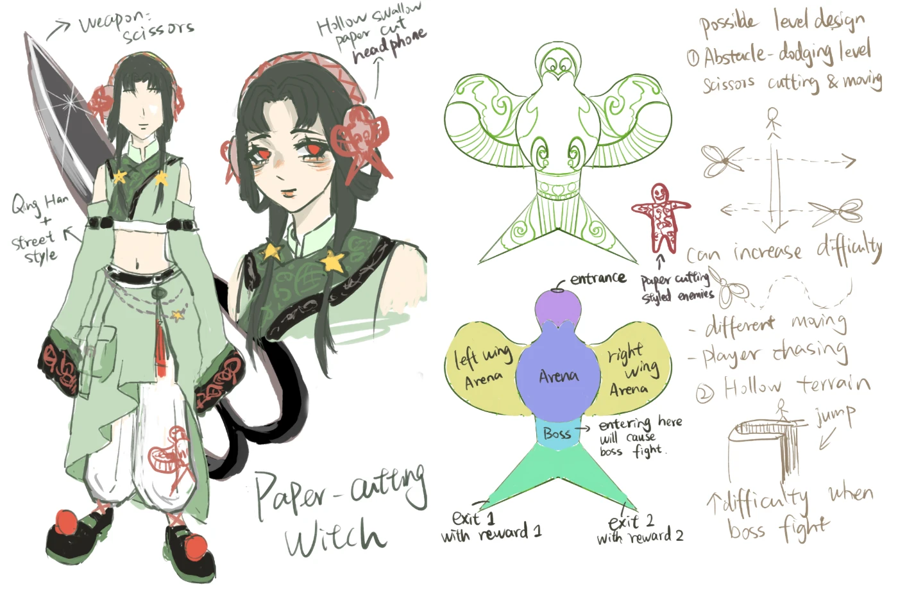
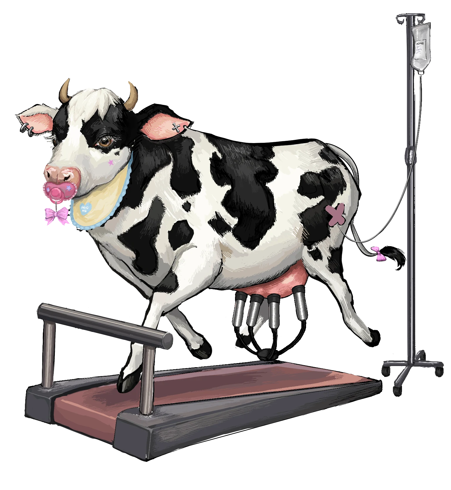
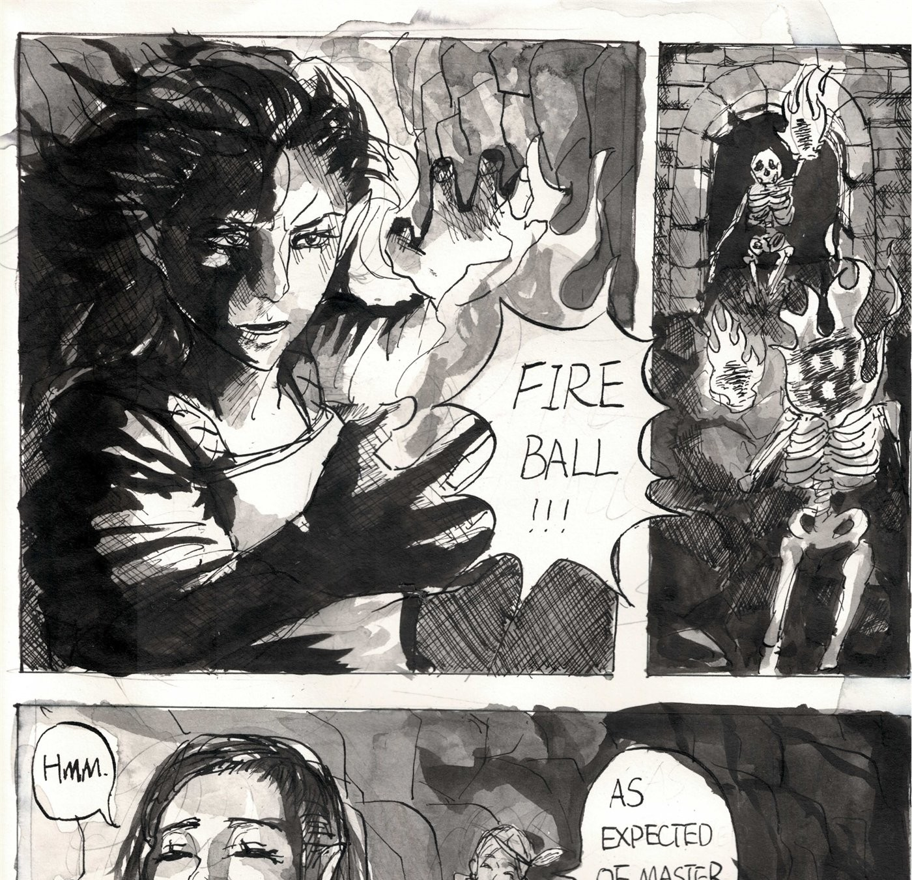
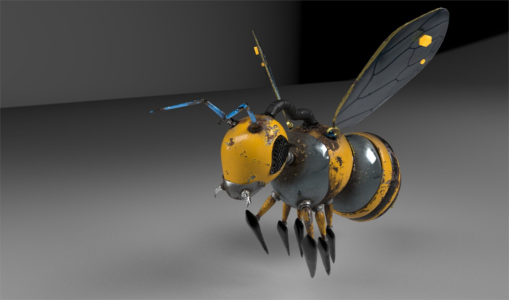

[ 03 ] 2D & 3D Art
Exhibit
Original character, concept, UI and environment art. Select a work to view it at full size.
- 2D works
- 10
- 3D works
- 3
[ 2D ]
Drawn & painted.










[ 3D ]
Modelled & lit.

